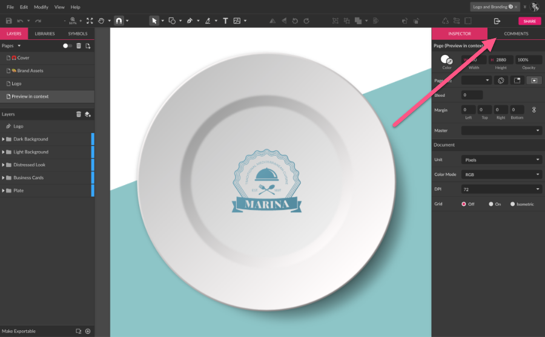
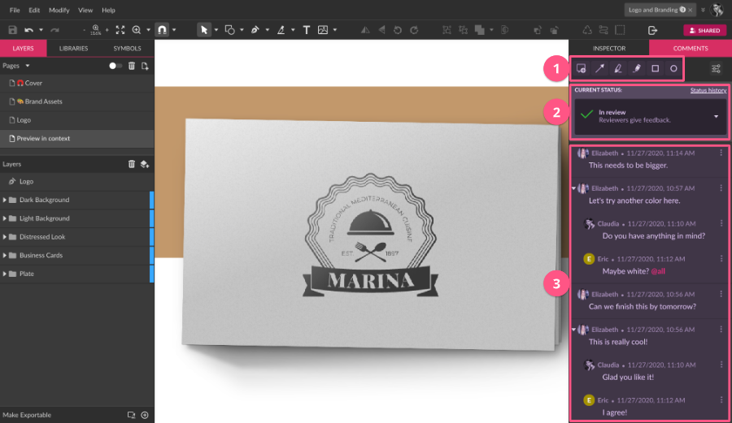
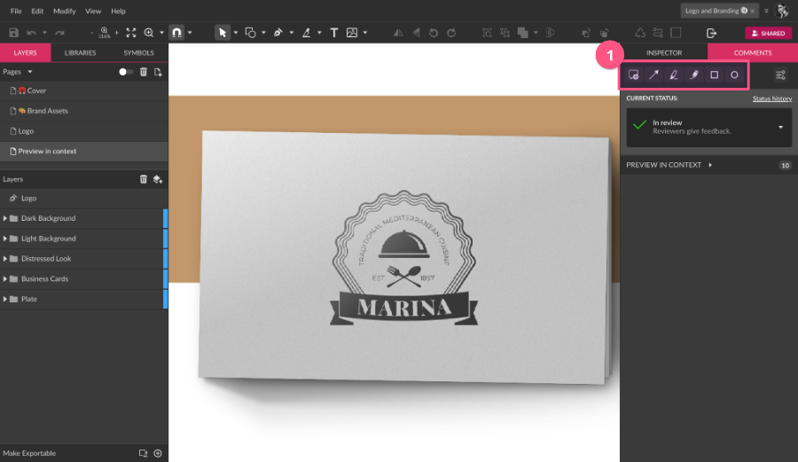
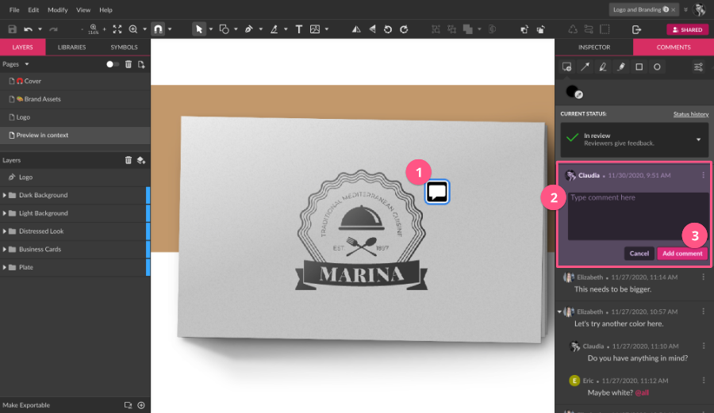
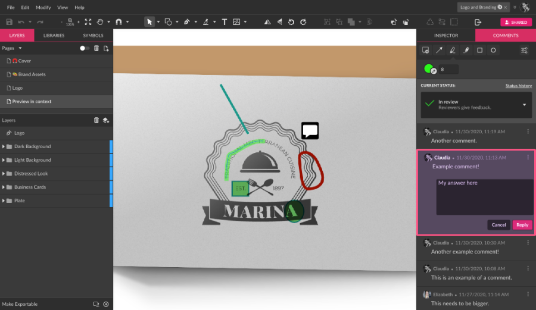

The Comments panel, where the collaboration workflow happens, is located on the right, in a tab right next to the Inspector panel.

On this panel, you will find the Annotation tools(1), the Design Approval Flow options(2), and interact with other collaborators and the file owner through the comments(3).

Annotation tools
Right at the top of the Comments panel, you will find the tools that allow collaborators to add comments and annotations directly to the canvas, the Annotation tools(1). Each Annotation tool has its own customization options once you select them.

As the file owner or a collaborator with a role that allows adding annotations, simply choose one of the tools, click on the canvas where you wish to add it(1), and an input field to add a comment will be shown on the panel(2). Type the comment, then click Add comment(3).

Adding notes
The first of the annotation tools allows you to add an icon to canvas indicating a simple note on the design. When selecting this tool, you can see a color picker right under the tools, with the option to change the color of the icon.
Drawing arrows and lines
The second annotation tool allows you to draw arrows and lines pointing to specific places on the canvas. To customize this tool, you can change the color, the size of the line and arrow, change the orientation of the arrow point, or make it a simple line by unchecking both “Start arrow” and “End arrow”.
Highlighting canvas areas
This annotation tool works as a highlighter, where the stroke has less opacity and is see-through. You can customize the color and the width of the stroke.
Drawing free-form lines and shapes
This annotation tool works similarly to the Freehand tool, where you can draw any free-form shape on the canvas, being able to customize the color and the stroke width.
Drawing rectangles
Just like the Rectangle tool, with this, you can add an annotation to the canvas by drawing a rectangle. You can change the color and width of the stroke, but also add a fill color with less opacity.
Drawing ellipses
Similar to the tool above, with this one you can leave an annotation by drawing an ellipse on the canvas. Customize by changing the color and width of the stroke, and the fill, just like the rectangle tool.
Interacting with other collaborators
The file owner and collaborators allowed to add comments can interact through the comments panel. The comments allow replies, tagging users, and assigning comments.
This interaction is in real-time: one person with the file opened can see another collaborator adding and replying to comments. Collaborators with specific roles that are accessing the file at the moment are shown on the toolbar, on the right.


Replying comments
To reply to a comment, simply click on it and a reply input field will show, with the options to Cancel and Reply.

Commenting options
Mentioning and assigning comments
In the comments, it’s possible to mention other collaborators directly. You can mention any of the other collaborators, the file owner, all collaborators (including the owner), or mention all those with some specific role, like Reviewers or Approvers.

You can also assign a comment or thread to a specific user. After using the mention, a checkbox is shown allowing one to choose from one of the collaborators to be assigned.
If you mark the checkbox, the comment is assigned to one of the collaborators.
To know more about the collaborator roles, check the Collaborators Roles section.
Notifications
The number of comments is indicated in magenta on the Comments panel tab.

When opening the Comments tab, new comments are highlighted.